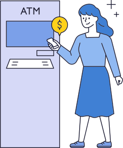

永豐ATM
存提e手掌


最新消息
FAQ
Q1
什麼是「掌靜脈」？
- 1.生物學上是生物辨識的一種方式，以紅外光辨識活體並擷取手掌靜脈的血紅素。
- 2.每個人的掌靜脈皆有獨特唯一性，且成年後終身不變。
Q2
什麼是「掌靜脈建檔」？
- 申請人於本行設置之掌靜脈裝置設備，將手掌放置掌靜脈感應器上方，以近紅外光之光譜特性與活體辨識技術，擷取掌靜脈影像轉換成可比對之資訊並以加密方式留存。
Q3
我可以建掌靜脈嗎？
- 只要您是本國成年自然人，就可以於永豐銀行臨櫃進行掌靜脈建檔。
Q4
我對掌靜脈有興趣，哪裡可以建檔呢？
- 請本人親持身分證於營業時間內，至永豐銀行任一分行即可臨櫃建檔。
Q5
建掌以後哪裡可以使用?
- 掌靜脈驗證係指客戶同意於本行設置之掌靜脈裝置設備，以掌靜脈驗證授權並完成交易。
- 1.用於臨櫃業務：存款 / 提款 / 匯款 / 定存等部分交易取代印章做為核驗身分。
- 2.用於ATM：於裝設有掌靜脈設備之永豐銀行ATM，以掌靜脈+理財或語音密碼(4位數)，即可進行存款 / 提款 / 轉帳 / 餘額查詢交易。